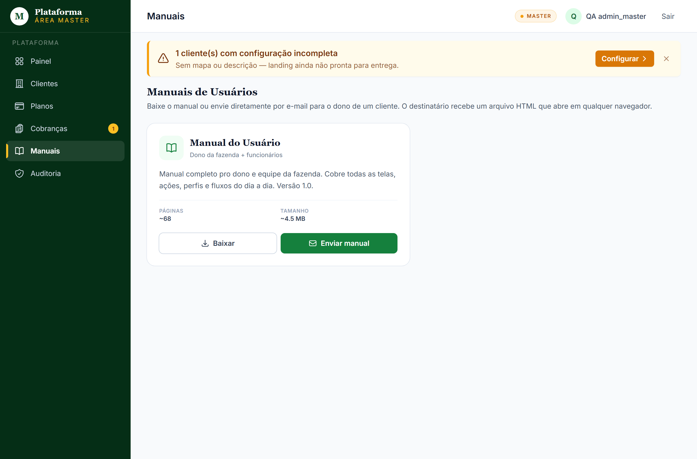

↑ Sumário
M
Manual do Master
Sistema de Gestão · Fazenda Macaybas
Área Master · Plataforma
Documento exclusivo da equipe que administra a plataforma. Cobre gestão de clientes, planos, cobranças, auditoria e distribuição de manuais. Não compartilhar com clientes finais.
Versão 1.0 · Abril de 2026
fazendamacaybas.com.br · /master
Sumário
Manual exclusivo da equipe Master. Clientes finais (donos de fazenda, funcionários) não têm acesso a esta área e não devem receber este documento.
1. O que é a área Master
Camada de administração da plataforma SaaS
A área Master é o painel da equipe que opera a plataforma — não é para clientes finais. É onde você:
- Cadastra novos clientes (clientes) e suas fazendas
- Define planos, preços e features disponíveis
- Gera e valida cobranças mensais
- Audita o que cada cliente / funcionário está fazendo
- Edita o CMS da landing pública (texto, imagens, banners)
- Distribui o manual aos donos de fazenda
⚠️ Esse manual NÃO é para clientes
Os clientes (donos de fazenda, funcionários) recebem o
Manual do Usuário — separado deste. Esse documento contém detalhes internos (sessão como cliente, auditoria, billing) que não devem ser expostos ao cliente final.
Endereço Master
O Master entra em uma URL diferente da dos clientes:
| Quem | Endereço |
|---|
| Cliente / dono / funcionário | app.fazendamacaybas.com.br |
| Master (equipe da plataforma) | app.fazendamacaybas.com.br/master (após login) |
↑ Voltar ao sumário
2. Administrador da Plataforma · o que pode (e o que não pode)
Sua função vs a do Dono da Fazenda
O sistema tem dois mundos completamente separados:
| Pode fazer… | Administrador da Plataforma (você) | Dono da Fazenda (cliente) |
|---|
| Acessar área Master (Painel, Clientes, Cobranças…) | ✅ Sim | ❌ Não — vê "acesso negado" |
| Acessar área operacional da fazenda (Rebanho, Financeiro…) | ❌ Não — você é redirecionado pro Painel Master | ✅ Sim — só da própria fazenda |
| Ver dados de outros clientes | ✅ Todos os clientes | ❌ Apenas a própria fazenda |
| Entrar como o cliente (ver pelos olhos dele) | ✅ Sim, com aviso visível e tudo auditado | ❌ Não |
| Definir quem é Administrador da Plataforma | ❌ Não — só a equipe técnica via configuração interna | ❌ Não |
⚠️ Você não consegue criar outro Administrador da Plataforma sozinho
O perfil "Administrador da Plataforma" não tem botão de "Promover" no sistema. Pra adicionar alguém novo nesse papel, é preciso pedir à equipe técnica fazer pelo banco diretamente. É uma proteção: ninguém vira "super-usuário" por engano nem por descuido.
↑ Voltar ao sumário
3. Como entrar no sistema
Acesso à área Master
1
Abra o navegador (Chrome, Edge, Firefox ou Safari) e digite app.fazendamacaybas.com.br/login.
2
Digite seu e-mail e senha. Se ainda não tem conta, peça à equipe técnica pra criar.
3
O sistema reconhece automaticamente que você é Administrador da Plataforma e te leva pro Painel Master.
ℹ️ Esqueci a senha
Use o link "Esqueci minha senha" na tela de login. Se o e-mail não chegar (pode ir pro spam), peça à equipe técnica resetar manualmente.
↑ Voltar ao sumário
4. Painel Master
Visão geral da plataforma

Painel · KPIs da plataforma SaaS
O painel mostra os números mais importantes da plataforma como negócio:
- Clientes ativos · total de clientes em uso
- Receita recorrente mensal (Receita Mensal Recorrente) · soma das mensalidades dos clientes ativos
- Faturas em aberto · valor a receber
- Comprovantes pendentes · clientes que enviaram comprovante e aguardam validação
- Atividades recentes · últimos eventos significativos (novo cliente, fatura aprovada, etc.)
↑ Voltar ao sumário
5. Lista de clientes
Todos os clientes cadastrados na plataforma

Lista de clientes
Em Clientes você vê todos os clientes cadastrados. Para cada um:
- Nome, endereço curto, documento (CNPJ/CPF)
- Plano contratado e status (ativo/suspenso/trial)
- Cidade, estado, contato
- Ações: editar · usuários · fazendas · CMS · entrar como cliente · suspender
↑ Voltar ao sumário
6. Criar novo cliente
Cadastro inicial de um cliente novo
1
Em Clientes, clique em "+ Novo cliente".
2
Preencha dados básicos: nome da fazenda, endereço curto (amigável pra URL: ex. "fazenda-do-zé"), documento (CNPJ ou CPF), e-mail e telefone do dono.
3
Endereço (cidade, estado, latitude/longitude — opcional, usado em mapa).
4
Plano: escolha um do catálogo. Se for trial, define data de fim do trial.
5
Salvar. Sistema cria o cliente + 1 fazenda inicial ("Sede da Fazenda") + estrutura de CMS padrão.
6
Em seguida, vai em Clientes → [novo] → Usuários e cadastra o Dono da Fazenda (e-mail real do contratante). Sistema envia senha temp por e-mail.
💡 Boa prática · cadastro inicial em 1 dia
Após criar o cliente + dono: envie o
Manual do Usuário via /master/manuais → "Enviar manual" pro novo dono. Ele recebe junto com o e-mail de boas-vindas e já entende o sistema.
↑ Voltar ao sumário
7. Editar / suspender cliente
Manutenção de clientes existentes
Editar dados
Em Clientes → [cliente] → Editar: muda nome, documento, contato, endereço. Slug NÃO pode mudar depois de criado (usado em URLs públicas e e-mails históricos).
Suspender cliente
Em Clientes → [cliente] → Toggle status: marca como suspenso. Efeito imediato:
- Usuários do cliente continuam podendo logar mas veem tela "Acesso suspenso. Entre em contato com o suporte."
- Dados ficam preservados (NÃO são deletados)
- Não pode lançar transações, criar registros
❗ NÃO existe DELETE de cliente via UI
Por proteção contra perda acidental. Se precisar deletar (caso real, ex.: cliente solicitou direito ao esquecimento LGPD), é via ferramenta técnica do desenvolvedor + backup obrigatório antes.
↑ Voltar ao sumário
8. Impersonar (entrar como cliente)
Suporte em primeira pessoa
Quando um cliente reporta um bug ou tem dúvida operacional, em vez de pedir vídeo/print, você entra como o cliente — vira o usuário dele temporariamente e vê exatamente o que ele vê.
1
Em Clientes → [cliente] → ícone "🎭 Impersonar", escolha qual usuário do cliente você quer simular (geralmente o dono).
2
Sistema te loga como aquele usuário. Aparece uma tarja amarela fixa no topo: "Você está impersonando [Nome] · Sair desta sessão".
3
Use o sistema como ele usaria. TUDO que você fizer fica registrado no log de auditoria registrado como "sessão Master entrando como cliente" e mostrando seu nome.
4
Quando terminar, clique em "Sair desta sessão" na tarja. Sistema volta pra sua conta master.
⚠️ Princípios de sessão como cliente
- NUNCA impersone sem motivo registrado (suporte, auditoria, bug investigation)
- NÃO crie/edite/delete dados durante sessão como cliente a menos que estritamente necessário
- Se precisar criar dado em nome do cliente, AVISE-O por e-mail/whatsapp ANTES
- Toda ação fica auditada — não há como esconder
↑ Voltar ao sumário
9. Reset de senha de funcionários
Cliente liga reclamando que perdeu acesso
Caso de uso comum: dono ou funcionário do cliente esqueceu a senha e ele mesmo não consegue resetar via "Esqueci minha senha" (problema com e-mail, etc.).
1
Em Clientes → [cliente] → Usuários, encontre o usuário (nome ou e-mail).
2
Clique em "Resetar senha".
3
Sistema gera senha temporária e envia ao e-mail do usuário. A senha aparece também na tela do master por 2 horas (caso o e-mail dele esteja com problema, você passa por outro canal).
4
No primeiro login, ele é forçado a trocar a senha temp.
💡 Inativar usuário sem deletar
Se um funcionário saiu da fazenda mas o cliente quer manter histórico do que ele lançou: NÃO delete — use
"Inativar". Login bloqueado, dados preservados, audit trail intacto.
↑ Voltar ao sumário
10. Catálogo de planos
Definição comercial da plataforma

Catálogo de planos
Cada plano define o que o cliente recebe: módulos disponíveis, número máximo de fazendas, número máximo de usuários, preço mensal.
Criar / editar plano
1
Planos → "+ Novo plano".
2
Nome, endereço curto, preço mensal, número máximo de fazendas e usuários.
3
Features: marque os módulos disponíveis no plano (Rebanho, Financeiro, Agrícola, Estoque, Máquinas, Tarefas, Documentos, Parceiros, Relatórios, CMS).
4
Salvar. Plano disponível pra atribuir a clientes novos.
⚠️ Mudança de features afeta clientes existentes
Se um cliente está no plano "Básico" e você desmarca "Agrícola", a sidebar dele perde o item "Agrícola" no próximo carregamento. Dados não somem — só ficam ocultos. Avise o cliente antes.
↑ Voltar ao sumário
11. Assinaturas dos clientes
Plano ativo de cada cliente
Cada cliente tem 1 assinatura ativa, que define seu plano atual + estado da cobrança. Em Clientes → [cliente] → Assinatura você vê e edita.
Mudar plano de um cliente
1
Em Clientes → [cliente] → Assinatura, escolha novo plano no dropdown.
2
Define quando a mudança vale: imediata ou no próximo ciclo (próxima fatura).
3
Salvar. Próxima fatura virá com novo valor.
Cancelar assinatura
Em Clientes → [cliente] → Assinatura → Cancelar: cliente continua com acesso até fim do período pago, depois é suspenso automaticamente. Dados ficam preservados (LGPD-friendly: cliente pode pedir reativação ou apagar via solicitação).
↑ Voltar ao sumário
12. Cobranças e faturas
Lista global de cobranças

Lista de cobranças
Em Cobranças você vê todas as faturas geradas: pagas, pendentes, atrasadas, em validação.
Status possíveis
| Status | O que significa | Ação típica |
|---|
| 🟡 Pendente | Fatura gerada, aguardando pagamento do cliente | Aguardar PIX/comprovante |
| 🔵 Em validação | Cliente enviou comprovante | Master valida (seção 14) |
| 🟢 Paga | Validada e quitada | — |
| 🔴 Atrasada | Vencida sem pagamento | Cobrar cliente; suspender após X dias |
↑ Voltar ao sumário
13. Gerar faturas em lote
Cobrança mensal automatizada
Mensalmente, no dia X, você precisa gerar faturas pra TODOS os clientes ativos. O wizard automatiza isso.
1
Cobranças → "Gerar faturas".
2
Escolha o tipo:
- Mensal: gera 1 fatura para cada cliente ativo
- Única: gera 1 fatura para 1 cliente específico (ex.: cobrança extra)
3
Período de competência (ex.: "Maio/2026"), data de vencimento (ex.: "10/05/2026").
4
Clique em "Preview" — sistema mostra a tabela de clientes × valor, sem gerar ainda. Confira.
5
Clique em "Gerar". Sistema cria todas as faturas + envia notificação ao dono de cada cliente com link/PIX.
ℹ️ Tenants com fatura do mês já gerada
Sistema NÃO duplica. Se já existe fatura "Maio/2026" para o cliente X, o wizard pula — gera apenas pros que ainda não tem.
↑ Voltar ao sumário
14. Validar comprovante de pagamento
Quando cliente envia comprovante PIX/transferência
Quando o cliente paga uma fatura e clica em "Enviar comprovante" no portal dele, a fatura entra em status Em validação. Você precisa conferir e aprovar.
1
Em Cobranças, filtre por "Em validação". Aparecem só as pendentes de aprovação.
2
Clique na fatura. Abre tela de validação com:
- Valor esperado vs valor declarado pelo cliente
- Data esperada vs data declarada
- Comprovante anexado (PDF, JPG ou PNG)
- E2E ID do PIX (se for PIX)
3
Confira o comprovante (abre em modal):
- Beneficiário bate com a chave PIX da plataforma?
- Valor bate com a fatura?
- Data bate ou é próxima?
4
Aprovar: marca como Pago, gera protocolo, notifica cliente.
Rejeitar: pedindo motivo (ex.: "valor diferente", "comprovante de outra empresa"). Cliente recebe e-mail e pode reenviar.
↑ Voltar ao sumário
15. Auto-aprovação de comprovantes
Automação opcional via leitura automática (OCR)
Validar manual cada comprovante toma tempo. O sistema pode tentar aprovar sozinho via OCR (lê o comprovante PIX, extrai valor + E2E ID + beneficiário, e compara com a fatura).
Como ligar
1
Cobranças → Configurações → Auto-aprovação.
3
Sistema mede a maturidade: percentual de comprovantes em que o OCR conseguiu extrair tudo certo. Quando a maturidade ≥ 70%, a auto-aprovação fica ativa em produção.
O que acontece quando ligado
- Toda vez que o master loga (1× por sessão), sistema processa em background os comprovantes pendentes
- Aprova os de alta confiança (valor exato, E2E reconhecido, beneficiário correto)
- Deixa em "revisão manual" os de baixa confiança (foto borrada, valor divergente)
- Toast no canto resume: "🤖 X aprovados, Y pra revisão, Z erros"
⚠️ OCR não substitui auditoria final
Toda aprovação automática fica marcada como "Aprovação automática". Se cliente reclamar de aprovação errada, é possível auditar e reverter.
↑ Voltar ao sumário
16. Log de atividades
Tudo que acontece na plataforma fica registrado

Log de auditoria
Toda ação significativa fica em na tela de Auditoria. O Master vê o log GLOBAL (todos os clientes); cada cliente vê apenas o próprio.
Eventos auditados
- Login / logout / mudança de senha
- Criação / edição / exclusão de qualquer entidade (animais, transações, etc.)
- Impersonação (start + actions durante + exit)
- Aprovação / rejeição de comprovante
- Mudança de plano / suspensão
- Envio de manual
- Publicação no CMS
↑ Voltar ao sumário
17. Filtros e investigação
Encontrar o evento que aconteceu
Filtros disponíveis em Auditoria:
| Filtro | Útil pra… |
|---|
| Tenant | Investigar atividade de UM cliente específico |
| Usuário (causer) | Quem executou a ação (master ou usuário do cliente) |
| Tipo de evento | created, updated, deleted, login, impersonate, etc. |
| Período | De/até (formato dd/mm/aaaa) |
| Texto livre | Busca em descrição da ação |
Cenários comuns
Cliente diz que "alguém apagou um animal" do rebanho
Filtra por: cliente=X, evento=deleted, modelo=Animal, período=últimos 7 dias. Vê quem fez e quando.
Suspeita de master agindo de má fé
Filtra por: causer=master_X, evento=impersonate ou updated. Audit trail completo.
↑ Voltar ao sumário
18. Distribuição de manuais
Baixar ou enviar manuais aos clientes

Distribuição de manuais
Em Manuais você vê os manuais disponíveis (atualmente: Manual do Usuário, este Master é interno e não distribuído). Cada manual tem 2 ações:
- Baixar · download direto do HTML self-contained pro seu computador
- Enviar manual · envia direto pelo sistema pro dono de um cliente
↑ Voltar ao sumário
19. Enviar manual por e-mail
Fluxo automatizado · cliente → dono ativo
1
No card do manual, clique em "Enviar manual".
2
Em Cliente, escolha o cliente da lista (todos os ativos).
3
Em Dono da fazenda, escolha o destinatário. Aparecem só usuários com perfil Dono da Fazenda e ativos daquele cliente — funcionários operacionais não aparecem.
4
Mensagem personalizada (opcional): pode adicionar contexto, ex. "Conforme nossa conversa, segue o manual atualizado."
5
Clique
"Enviar agora". Sistema:
- Otimiza imagens (PNG → JPEG q=75 via GD): ~45 MB → ~12 MB
- Se anexo cabe em 20 MB: anexa direto
- Se passa de 20 MB: gera link signed URL de 30 dias
- Audita no log com modo (anexo/link) e tamanho final
🛡️ Validação de segurança no servidor
Mesmo se alguém adulterar o formulário no front, o controller re-valida no banco que o user_id pertence ao vínculo do cliente, é Dono da Fazenda E está ativo. Não há como enviar pra outro cliente ou pra usuário desativado.
↑ Voltar ao sumário
20. CMS da landing pública
Editar texto, imagens, banners do site
O Master controla a landing page pública de cada cliente. Cada cliente tem sua própria landing, editável via CMS sem mexer em código.
Estrutura do CMS
- Páginas: Home, Sobre, Contato (criadas no scaffolding inicial)
- Seções: Header, Hero, Sobre, Galeria, Depoimentos, Newsletter, Rodapé (cada uma com campos editáveis específicos)
- Menus: principal + rodapé (drag-drop pra reordenar)
- Configurações: nome do site, favicon, logo, redes sociais, contato
Acesso: Clientes → [cliente] → CMS (per-cliente) OU CMS no menu principal (para o cliente master, fazenda-macaybas).
↑ Voltar ao sumário
21. Editar seções, banners, galeria
Como mudar conteúdo da landing
1
No CMS de um cliente, clique numa seção (ex.: "Hero").
2
Edite os campos específicos da seção: título, subtítulo, imagem de fundo, CTA, etc. Os campos disponíveis dependem do tipo da seção.
3
Pra galeria: arraste fotos, reordene, adicione legendas.
4
Salvar como rascunho primeiro. Você pode visualizar antes de tornar público.
⚠️ Imagens otimizadas automaticamente
Upload aceita JPG/PNG até 5 MB. Sistema gera thumbs (Intervention/Image) pra mobile e desktop. Não suba imagem maior que 2400px de largura — desperdício.
↑ Voltar ao sumário
22. Rascunho → publicar
Fluxo de versionamento do CMS
Toda mudança no CMS passa por dois estados:
| Estado | Quem vê | Como avança |
|---|
| 📝 Rascunho | Apenas master logado (preview) | Botão "Salvar rascunho" |
| 🌐 Publicado | TODO MUNDO (público na landing) | Botão "Publicar" |
Por que rascunho?
Pra evitar publicar conteúdo errado direto no público. Você edita em rascunho, abre o site em outra aba (com modo preview), confere visualmente, então publica.
Publicar tudo de uma página
Se editou várias seções de uma página, em vez de publicar uma a uma, use "Publicar tudo" no topo da página. Publica todas as seções com rascunho pendente de uma vez.
↑ Voltar ao sumário
23. Boas práticas operacionais
Como rodar a operação master com qualidade
Diário
- Abra o painel master de manhã. Confira: comprovantes pendentes, faturas atrasadas, atividades suspeitas.
- Aprove ou rejeite os comprovantes em validação (alvo: zero pendência ao final do dia).
- Responda dúvidas de clientes via canal definido (WhatsApp, e-mail, telefone).
Mensal
- Dia 1 do mês: rode Cobranças → Gerar faturas (mensal). Confira preview antes.
- Dia 5: confira faturas geradas. Reenvie pra clientes que não receberam.
- Dia 15: lista de inadimplentes. Cobre primeiro por WhatsApp/e-mail. Suspenda só após 30+ dias.
- Fim do mês: revisão de receita (Receita Mensal Recorrente), churn, novos clientes.
Quando o cliente reclama
1
Anote: o que aconteceu, em qual tela, qual usuário, em qual horário.
2
Vá em Auditoria, filtra por cliente + período. Provavelmente encontra o evento.
3
Se não conseguir reproduzir, impersone o cliente e tente repetir o caminho que ele fez.
4
Reporte ao time técnico com tudo: vínculo do cliente, user_id, URL, timestamps, ID da activity_log.
↑ Voltar ao sumário
24. Solução de problemas
Erros conhecidos e como resolver
| Sintoma | Causa provável | Solução |
|---|
| "Acesso suspenso" ao logar como master |
Conta master desativada |
Time técnico reativa via ferramenta técnica |
| Comprovante OCR retorna lixo |
Foto borrada ou de baixa qualidade |
Pede ao cliente reenviar foto melhor; valida manual |
| Wizard "Gerar faturas" não cria pra um cliente |
Tenant suspenso ou sem assinatura ativa |
Reativa antes de gerar; confirma plano |
| CMS publicado mas landing não atualiza |
Cache CDN (Cloudflare/Hostinger) |
Aguarda 5 min OU purge cache no painel |
| Não consegue entrar como cliente (botão sumiu) |
Tenant suspenso (sessão como cliente bloqueada por segurança) |
Reativa cliente temporariamente; entra como o cliente; suspende de novo |
| Manual envio falha "destinatário inválido" |
Cliente não tem Dono da Fazenda ativo cadastrado |
Vai em Clientes → [cliente] → Usuários e cadastra/reativa o dono |
| Anexo de e-mail bouncing (rejected) |
Manual passou de 25 MB (limite Gmail/Outlook) |
Sistema já cai pro modo link signed automaticamente acima de 20 MB. Confirme no log de envio |
Contato técnico
Bugs do sistema: reporta no canal técnico interno com:
- URL onde aconteceu
- vínculo do cliente (se aplicável) + user_id (se impersonando)
- Timestamp aproximado
- Screenshot
- ID da activity_log relacionada (se já investigou)
Bom trabalho na operação!
Manual do Master · v1.0 · abril 2026
↑ Voltar ao sumário